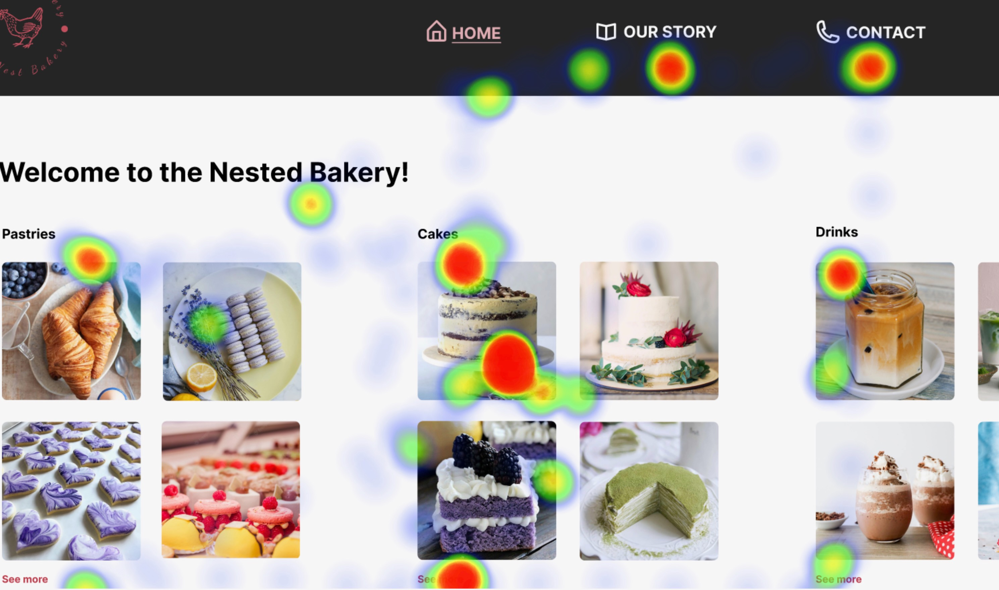
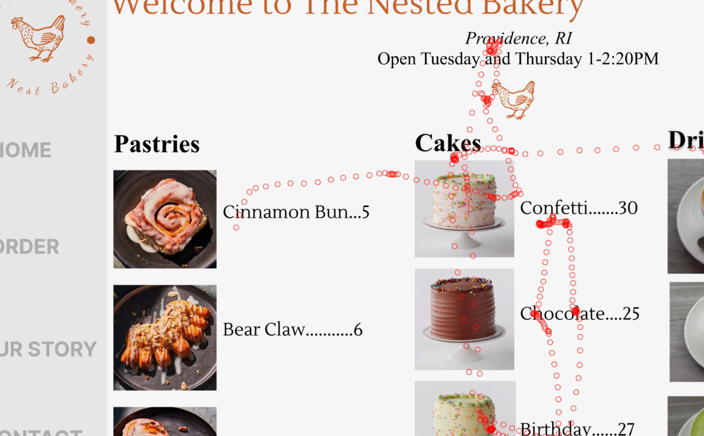
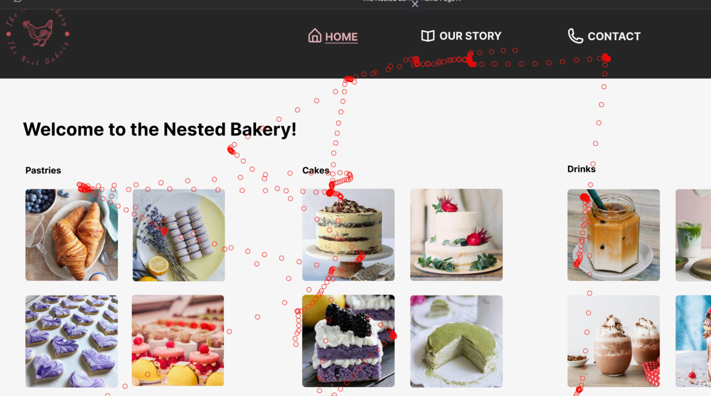
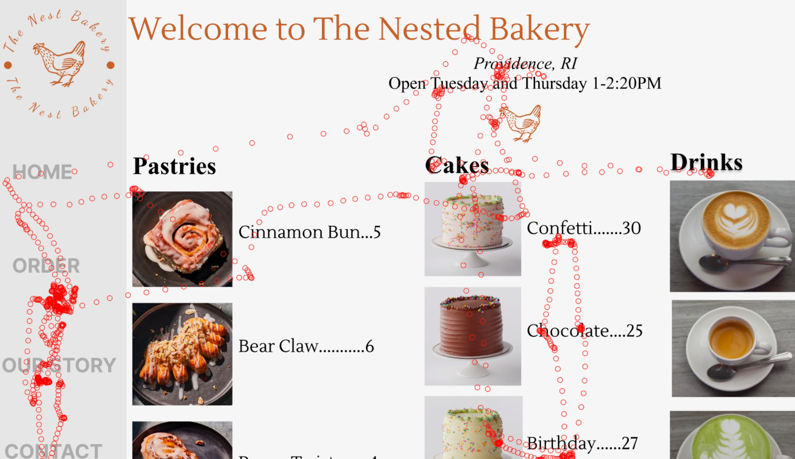

Part 1: Eye Tracking
Below is a Figma of a bakery homepage made by the TAs for my course, we created 2 new versions, A and B that redesigned the website. I considered principles discussed in class, usability, hierarchy, conceptual models.
Redesigning the Figma
Version A:
Below is the redesigned Figma that I made going off of the template above.
Version B:
Below is the redesigned Figma that my partner made going off of the template above.
Eye-Tracking
To analyze our eye tracking data, we generated a heatmap (a still image that depicts where our participants’ gazes were fixed) and an animated replay of their gaze motion, both overlaid on your interface so you can see what interface elements test participants were looking at.
User Prompt:
We asked each user (one was looking at each Figma) the following question:
"Get familliar with the websites, then try and custom order a cake (with your eyes only)"
Results
Heatmaps
Version A:

Version B:

Action Shots
Version A:

Version B:

Final shot
Version A:

Version B:

Interpretation
The heatmap indicates that both users focused their attention on the "cake" section, this was expected since the Prompt was to order a cake. Then they went to the "Order" and "Our Story" section for Version A, and the "Our Story" and "Contact" section for Version B. Verson A's reaction aligns with our hypothesis, they found the cake section and then settled on the order button. Version B did not have an "order" option, so I expected them to spend most of their time on the cake, not the menu bar, however, they ended up looking at two menu items that did not necessariarly have anything to do with ordering, this was a surprise.